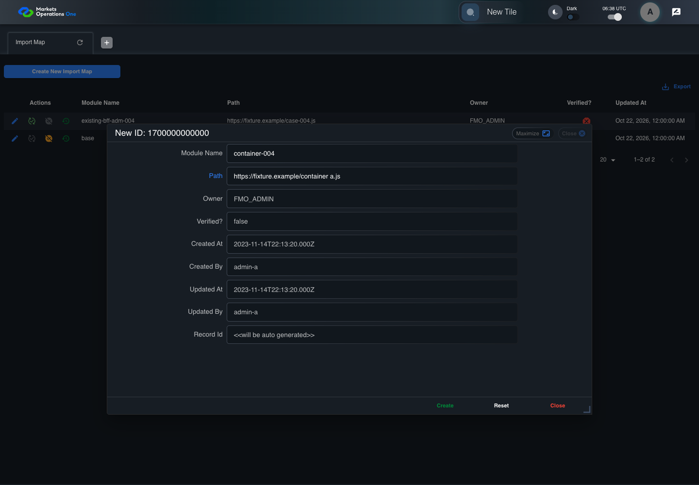
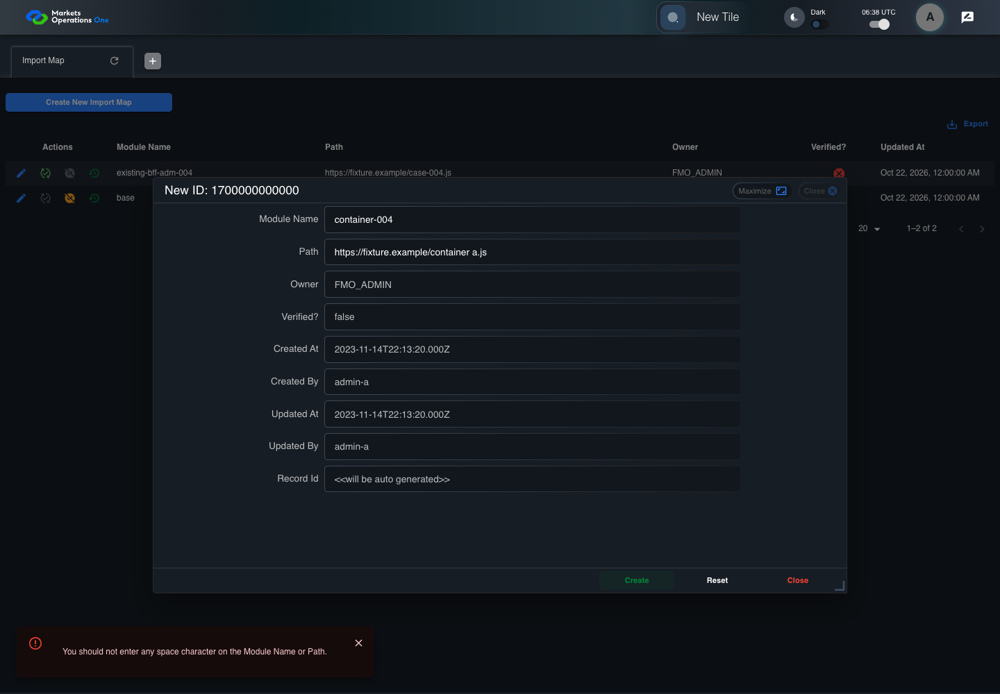

BFF-ADM-004 current BFF administration through actual UI
PASS · application/run-072/bff-adm-004-current-bff-administration-through-actual-ui-b8f15256c5fc-attempt-1 · ACTUAL_APPLICATION_LOCAL_SERVICES
Actual current React and exact-current BFF admin controllers/services/JPA with actual migration DDL in disposable PostgreSQL. Controlled OUD/EMS2 identities and local Spring bootstrap. Fixture SQL seeds/mutates isolated records; service errors are actual database errors. Undefined agreed messages remain unresolved acceptance.
2026-10-22T06:38:43.211Z to 2026-10-22T06:38:46.853Z
Assertions and result · Artifact manifest · Exact run inputs and source hashes
Result SHA-256:0b87e3db7a3a7b39ef8c0aa77be18a1de3278883873bfe2fa0de9298b80c5de5Machine observations
- actual-identity-projection.json
2876aeb3296da282818e8392349dc54d84c9f63de66a6f53809f82af97fd5531 - baseline-inputs.json
395c432e64593b9caaf846724b8e73f1179c6758bc0731fadf9b9d50fe791a14 - bff-boundary.json
e64fff95106631443b65671f3b02448f8b2f71f4c3d3ee37de01049f15bc47ff - committed-ui-submission-comparisons.json
88983ca466a41c224562feb6aadace80a86990539edfaf8b2cacd7895bd6d7d5 - creation-clock.json
fe10308de0039456e4e5c9a68623f00912b3428463e9dfd62781e74bad7fa815 - fixture-step-4.json
69227b871ec998a40b8093073491231313b397e330dd4630001821ffcaf54943 - fixture-step-5.json
93e6a7dd18ca4bdeb40c43dabc377e32b3339c2aa7e669a0174150b503f01876 - initial-persisted-records.json
f9ab3d2ed9fd9a7a7154f0cb370c93818e7fe50b265b71b05a1306d6aa0587a8 - persisted-after-submit.json
65c9b40d811140b17095b76b4873b213f7222fdecc1b6bd5bfbd9a8dd6f185fb - ui-origin-bff-requests.json
85045bfea20ddc9140389898029809ff5abb558aed45ea4f38cc230cd5818d5f
Screenshot capture: CAPTURED. Named frames: 14.
Step screenshot bindings: COMPLETE. 13/13 canonical steps have execution screenshots.
Bindings measure structural coverage only. They do not establish screenshot content quality or relevance.
Screenshot content review: NOT_REVIEWED. Recorded context: 0/14 frames. Identical image bytes: 6 repeated frames. Recorded context does not establish human visual review.
Canonical step timeline
Given Admin A uses subject "admin-a" with role "FMO_ADMIN" in an isolated authenticated browser
Execution: PASSED.1. step-01 Visible state after step 1: Given Admin A uses subject "admin-a" with role "FMO_ADMIN" in an isolated authenticated browser
2026-10-22T06:38:44.741Z · 1440×1000
Step: /Users/lushevol/code/github/ratan-release-impact/workbench/tasks/ui-test-coverage-20261022/test-cases.md:14771
SHA-256:dc297f19f17ab50ee02ffaa1d16d7456ab414b0d2e0d66af83592e64f8b0ba71And the controlled Import Map fixture records the initial grid rows and persisted values
Execution: PASSED.
2. step-02 Visible state after step 2: And the controlled Import Map fixture records the initial grid rows and persisted values
2026-10-22T06:38:44.856Z · 1440×1000
Step: /Users/lushevol/code/github/ratan-release-impact/workbench/tasks/ui-test-coverage-20261022/test-cases.md:14772
SHA-256:dc297f19f17ab50ee02ffaa1d16d7456ab414b0d2e0d66af83592e64f8b0ba71Image bytes match frame 1. An unchanged image can be valid for consecutive assertions. This match does not establish correct step content.
And the controlled creation clock returns 1700000000000 milliseconds
Execution: PASSED.3. step-03 Visible state after step 3: And the controlled creation clock returns 1700000000000 milliseconds
2026-10-22T06:38:44.889Z · 1440×1000
Step: /Users/lushevol/code/github/ratan-release-impact/workbench/tasks/ui-test-coverage-20261022/test-cases.md:14773
SHA-256:eb105a1d68608ee00dbc181821c35b93c7bb2845c99fca9032e4c3099dddc399And the baseline fixture data defines "Module Name" as "container-004"
Execution: PASSED.
4. step-04 Visible state after step 4: And the baseline fixture data defines "Module Name" as "container-004"
2026-10-22T06:38:44.922Z · 1440×1000
Step: /Users/lushevol/code/github/ratan-release-impact/workbench/tasks/ui-test-coverage-20261022/test-cases.md:14774
SHA-256:dc297f19f17ab50ee02ffaa1d16d7456ab414b0d2e0d66af83592e64f8b0ba71Image bytes match frame 2. An unchanged image can be valid for consecutive assertions. This match does not establish correct step content.
And the baseline fixture data defines "Path" as "https://fixture.example/case-004.js"
Execution: PASSED.
5. step-05 Visible state after step 5: And the baseline fixture data defines "Path" as "https://fixture.example/case-004.js"
2026-10-22T06:38:44.960Z · 1440×1000
Step: /Users/lushevol/code/github/ratan-release-impact/workbench/tasks/ui-test-coverage-20261022/test-cases.md:14775
SHA-256:eb105a1d68608ee00dbc181821c35b93c7bb2845c99fca9032e4c3099dddc399Image bytes match frame 3. An unchanged image can be valid for consecutive assertions. This match does not establish correct step content.
When Admin A clicks the button labeled "Create New Import Map" on the Import Map administration page
Execution: PASSED.6. step-06 Visible state after step 6: When Admin A clicks the button labeled "Create New Import Map" on the Import Map administration page
2026-10-22T06:38:45.138Z · 1440×1000
Step: /Users/lushevol/code/github/ratan-release-impact/workbench/tasks/ui-test-coverage-20261022/test-cases.md:14776
SHA-256:edc066a9bc1110184d40faffdc7b1d47389ed9b65364df419e252f8fdfe4db97Then the dialog titled "new ID: 1700000000000" is visible on the Import Map administration page
Execution: PASSED.7. step-07 Visible state after step 7: Then the dialog titled "new ID: 1700000000000" is visible on the Import Map administration page
2026-10-22T06:38:45.193Z · 1440×1000
Step: /Users/lushevol/code/github/ratan-release-impact/workbench/tasks/ui-test-coverage-20261022/test-cases.md:14777
SHA-256:f5cc10fc1491777c9f521c138f3f354b9e0926a8f58ad90b1cb703974075a63aWhen Admin A fills the textbox labeled "Module Name" with "container-004" in dialog "new ID: 1700000000000"
Execution: PASSED.8. step-08 Visible state after step 8: When Admin A fills the textbox labeled "Module Name" with "container-004" in dialog "new ID: 1700000000000"
2026-10-22T06:38:45.621Z · 1440×1000
Step: /Users/lushevol/code/github/ratan-release-impact/workbench/tasks/ui-test-coverage-20261022/test-cases.md:14778
SHA-256:69d943a3dccb0ca333cf74cc5aaa1a07514a593e88288ebb3b390f0b8f7b0110And Admin A fills the textbox labeled "Path" with "https://fixture.example/container a.js" in dialog "new ID: 1700000000000"
Execution: PASSED.
9. step-09 Visible state after step 9: And Admin A fills the textbox labeled "Path" with "https://fixture.example/container a.js" in dialog "new ID: 1700000000000"
2026-10-22T06:38:46.054Z · 1440×1000
Step: /Users/lushevol/code/github/ratan-release-impact/workbench/tasks/ui-test-coverage-20261022/test-cases.md:14779
SHA-256:430e7faf31dab169139cfc5320db669cf8d48cb21b1ef20489ef8ece7c0b13d5And Admin A clicks the button labeled "Create" in dialog "new ID: 1700000000000"
Execution: PASSED.10. step-10 Visible state after step 10: And Admin A clicks the button labeled "Create" in dialog "new ID: 1700000000000"
2026-10-22T06:38:46.311Z · 1440×1000
Step: /Users/lushevol/code/github/ratan-release-impact/workbench/tasks/ui-test-coverage-20261022/test-cases.md:14780
SHA-256:c7e55c3e9265fad72a51e4bdfea30c2e20ba4e5ee42c866eb3622b657a68f827Then the dialog titled "new ID: 1700000000000" remains visible on the Import Map administration page
Execution: PASSED.
11. step-11 Visible state after step 11: Then the dialog titled "new ID: 1700000000000" remains visible on the Import Map administration page
2026-10-22T06:38:46.360Z · 1440×1000
Step: /Users/lushevol/code/github/ratan-release-impact/workbench/tasks/ui-test-coverage-20261022/test-cases.md:14781
SHA-256:b22cbf2b1a3a9e628a8211bdfc29368b7cbe3ea1ed7f95174969bde87da476bbAnd the alert with severity "error" in the portal snackbar contains the exact text "You should not enter any space character on the Module Name or Path."
Execution: PASSED.
12. step-12 Visible state after step 12: And the alert with severity "error" in the portal snackbar contains the exact text "You should not enter any space character on the Module Name or Path."
2026-10-22T06:38:46.415Z · 1440×1000
Step: /Users/lushevol/code/github/ratan-release-impact/workbench/tasks/ui-test-coverage-20261022/test-cases.md:14782
SHA-256:b22cbf2b1a3a9e628a8211bdfc29368b7cbe3ea1ed7f95174969bde87da476bbImage bytes match frame 11. An unchanged image can be valid for consecutive assertions. This match does not establish correct step content.
And the Import Map data grid with column "Record Id" row identifiers and loaded field values equal the initial grid snapshot on the Import Map administration page
Execution: PASSED.
13. step-13 Visible state after step 13: And the Import Map data grid with column "Record Id" row identifiers and loaded field values equal the initial grid snapshot on the Import Map administration page
2026-10-22T06:38:46.529Z · 1440×1000
Step: /Users/lushevol/code/github/ratan-release-impact/workbench/tasks/ui-test-coverage-20261022/test-cases.md:14783
SHA-256:b22cbf2b1a3a9e628a8211bdfc29368b7cbe3ea1ed7f95174969bde87da476bbImage bytes match frame 12. An unchanged image can be valid for consecutive assertions. This match does not establish correct step content.
Additional named frames

The final visible state after the named test assertions.
2026-10-22T06:38:46.611Z · 1440×1000Step: Test source: /Users/lushevol/code/github/ratan-release-impact/workbench/e2e/audit-specs/bff-admin.spec.ts:11
SHA-256:
b22cbf2b1a3a9e628a8211bdfc29368b7cbe3ea1ed7f95174969bde87da476bbImage bytes match frame 13. An unchanged image can be valid for consecutive assertions. This match does not establish correct step content.
Screenshots establish visible state only. Assertions and traces support functional claims.